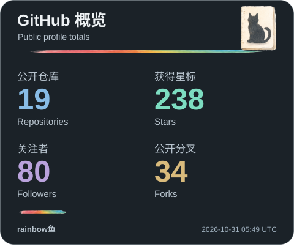
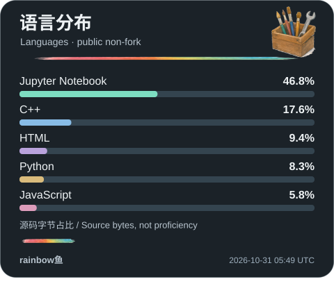
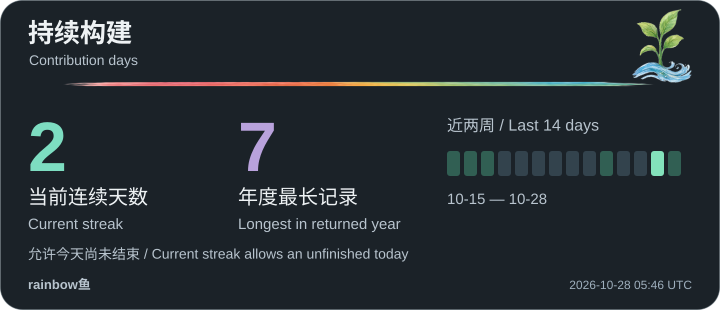
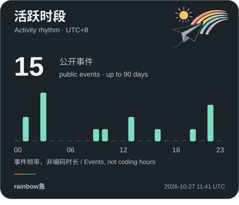
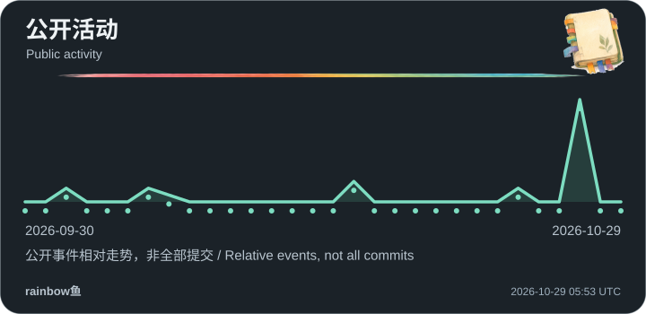
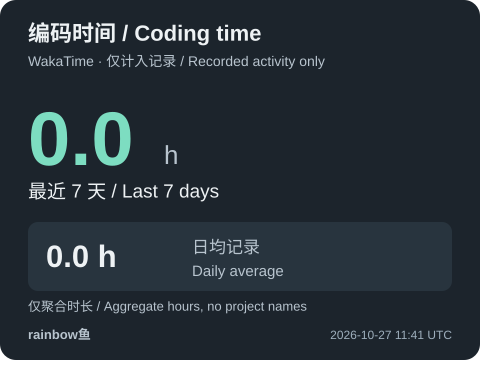

PHYSICAL AI
从观测，到可检验的预测
物理约束、风场与世界模型。关注控制响应、稀疏观测与模型可靠性。
Python · PyTorch · OpenFAST浙江大学博士
RESEARCH · BUILD · EXPLAIN
我探索物理世界中的 AI，构建工程智能体，也把复杂的科学讲成可以探索的故事。
在真实问题与想象力之间，持续探索。
向下探索 ↓01 / SELECTED WORK
从风场预测到工程设计，从公式动画到科学叙事。每一个项目，都有自己的问题与表达。
 物理 AI · 研究平台PhysCast从稀疏观测出发，探索有物理依据的风场预测。
物理 AI · 研究平台PhysCast从稀疏观测出发，探索有物理依据的风场预测。持续研究 · 源码私有
围绕控制干预后的风场响应，将物理仿真、生成式预测与独立验证连接起来。关注模型在什么条件下可靠、何时应表达不确定性。
 工程智能体 · 工具构建OmniForge · 万象工坊把工程意图转化为可以检查、迭代和交付的工作。
工程智能体 · 工具构建OmniForge · 万象工坊把工程意图转化为可以检查、迭代和交付的工作。开发中 · 源码私有
围绕建模、计算与验证组织自适应智能体和工程工具。把输入、执行轨迹、结果与报告串在一起，让工程过程保留证据，让经验能够复用。
 多模态 AI · 数学可视化Wiscomper · 智算视界从一道公式，到一段看得懂的数学动画。
多模态 AI · 数学可视化Wiscomper · 智算视界从一道公式，到一段看得懂的数学动画。 智能设计 · 工程计算The AI Engineer连接几何、网格、拓扑优化与物理计算。
智能设计 · 工程计算The AI Engineer连接几何、网格、拓扑优化与物理计算。 知识创作 · 动态演示AI 进化史沿着视觉、生成模型与智能体，理解 AI 如何演进。
知识创作 · 动态演示AI 进化史沿着视觉、生成模型与智能体，理解 AI 如何演进。 科学叙事 · 创作工具rainbow鱼科普工作台把问题变成故事，把科学机制变成画面。
科学叙事 · 创作工具rainbow鱼科普工作台把问题变成故事，把科学机制变成画面。 数学动画 · 可复用组件Manim Extend Rainbow把反复打磨的数学动画，沉淀为可复用工具。
数学动画 · 可复用组件Manim Extend Rainbow把反复打磨的数学动画，沉淀为可复用工具。02 / ACTIVITY OBSERVATORY
贡献动画、编码统计与每日更新卡片，保留在这里。它们记录过程，不替代作品本身。

卡片暂不可用，等待下一次更新。

卡片暂不可用，等待下一次更新。

卡片暂不可用，等待下一次更新。

卡片暂不可用，等待下一次更新。

卡片暂不可用，等待下一次更新。
卡片暂不可用，等待下一次更新。

卡片暂不可用，等待下一次更新。

卡片暂不可用，等待下一次更新。

卡片暂不可用，等待下一次更新。
基于最近 7 天的真实编码记录，具体时间以卡片及更新状态为准；更新失败时保留最近一次快照。
保留旧版卡片作为历史快照。它们可能较旧，或显示当时的数据源错误；不代表实时状态。
旧里程碑卡片的数据源曾报错，原文件留存于仓库档案。
卡片暂不可用，等待下一次更新。
卡片暂不可用，等待下一次更新。
卡片暂不可用，等待下一次更新。
卡片暂不可用，等待下一次更新。
卡片暂不可用，等待下一次更新。
卡片暂不可用，等待下一次更新。
卡片暂不可用，等待下一次更新。
卡片暂不可用，等待下一次更新。
动效开关同时控制首页视觉、贡献动画；系统减少动态效果偏好会自动生效。
03 / A LITTLE ABOUT ME
我是 rainbow鱼，浙江大学博士。
我感兴趣的是模型与世界相遇的地方：一次预测有没有物理依据，一个智能体能否把想法做出来，一段动画能否让复杂机制变得清楚。研究、写代码、做可视化，对我来说是相互连接的事。
物理约束、风场与世界模型。关注控制响应、稀疏观测与模型可靠性。
Python · PyTorch · OpenFAST连接自然语言、建模与计算，保留过程，让结果有据可查。
Agents · FEM · Optimization用数学动画、交互场景与科学影像，让抽象关系成为直观理解。
Manim · Three.js · Remotion04 / KEEP THE CONVERSATION GOING
物理 AI、工程智能体、数学可视化，或一个有趣的想法。欢迎来交流。